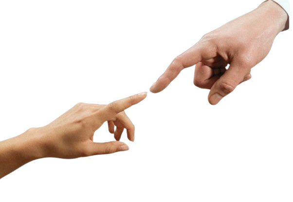

Do You Need A Hug?
Physical touch refers to recieving and expressing affection through touch, physical closeness,
and other forms of physical connection. Whether it's braiding your friends hair, holding your Mom's hand, or
leaning in for hugs the first time you meet someone, sometimes the act of physical touch can make you feel closer
to someone faster.
